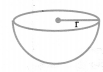
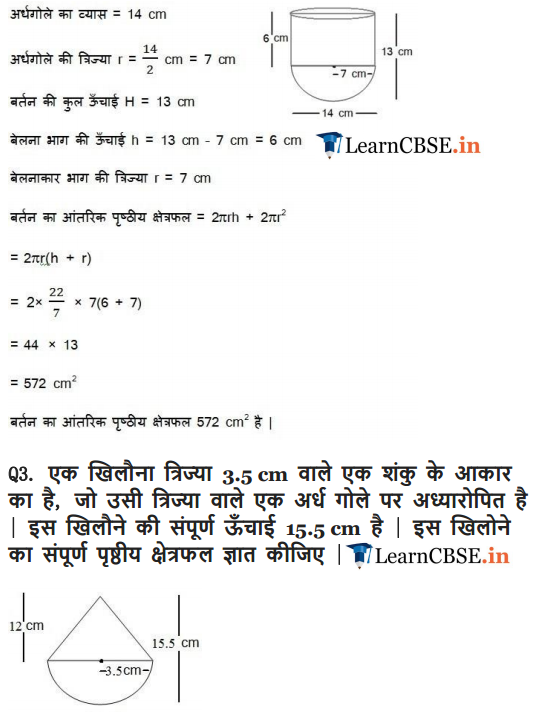
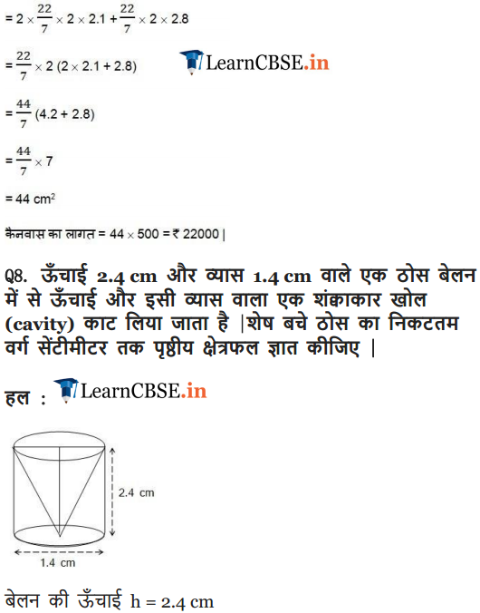

Get Free NCERT Solutions for Class 10 Maths Chapter 13 Ex 13.1 PDF. Surface Areas and Volumes Class 10 Maths NCERT Solutions are extremely helpful while doing your homework. Exercise 13.1 Class 10 Maths NCERT Solutions were prepared by Experienced LearnCBSE.in Teachers. Detailed answers of all the questions in Chapter 13 Maths Class 10 Surface Areas and Volumes Exercise 13.1 provided in NCERT TextBook.
Topics and Sub Topics in Class 10 Maths Chapter 13 Surface Areas and Volumes:
| Section Name | Topic Name |
| 13 | Surface Areas And Volumes |
| 13.1 | Introduction |
| 13.2 | Surface Area Of A Combination Of Solids |
| 13.3 | Volume Of A Combination Of Solids |
| 13.4 | Conversion Of Solid From One Shape To Another |
| 13.5 | Frustum Of A Cone |
| 13.6 | Summary |
- Surface Areas and Volumes Class 10 Ex 13.1
- प्रश्नावली 13.1 का हल हिंदी में
- Surface Areas and Volumes Class 10 Ex 13.2
- प्रश्नावली 13.2 का हल हिंदी में
- Surface Areas and Volumes Class 10 Ex 13.3
- प्रश्नावली 13.3 का हल हिंदी में
- Surface Areas and Volumes Class 10 Ex 13.4
- प्रश्नावली 13.4 का हल हिंदी में
- Surface Areas and Volumes Class 10 Ex 13.5
- प्रश्नावली 13.5 का हल हिंदी में
- Surface Areas and Volumes Class 10 Extra Questions
NCERT Solutions for Class 10 Maths Chapter 13 Surface Areas and Volumes Ex 13.1
NCERT Solutions for Class 10 Maths Chapter 13 Surface Areas and Volumes Ex 13.1 are part of NCERT Solutions for Class 10 Maths. Here we have given NCERT Solutions for Class 10 Maths Chapter 13 Surface Areas and Volumes Ex 13.1.
| Board | CBSE |
| Textbook | NCERT |
| Class | Class 10 |
| Subject | Maths |
| Chapter | Chapter 13 |
| Chapter Name | Surface Areas and Volumes |
| Exercise | Ex 13.1 |
| Number of Questions Solved | 9 |
| Category | NCERT Solutions |
Ex 13.1 Class 10 Maths Question 1.
2 cubes each of volume 64 cm3 are joined end to end. Find the surface area of the resulting cuboid.
Solution:
Ex 13.1 Class 10 Maths Question 2.
A vessel is in the form of a hollow hemisphere mounted by a hollow cylinder. The diameter of the hemisphere is 14 cm and the total height of the vessel is 13 cm. Find the inner surface area of the vessel.
Solution:
You can also download the free PDF of Ex 13.1 Class 10 Surface Areas and Volumes NCERT Solutions or save the solution images and take the print out to keep it handy for your exam preparation.
Download NCERT Solutions For Class 10 Maths Chapter 13 Surface Areas and Volumes PDF
Ex 13.1 Class 10 Maths Question 3.
A toy is in the form of a cone of radius 3.5 cm mounted on a hemisphere of the same radius. The total height of the toy is 15.5 cm. Find the total surface area of the toy.
Solution:
Ex 13.1 Class 10 Maths Question 4.
A cubical block of side 7 cm is surmounted by a hemisphere. What is the greatest diameter the hemisphere can have? Find the surface area of the solid.
Solution:
Ex 13.1 Class 10 Maths Question 5.
A hemispherical depression is cut out from one face of a cubical wooden block such that the diameter d of the hemisphere is equal to the edge of the cube. Determine the surface area of the remaining solid.
Solution:
Ex 13.1 Class 10 Maths Question 6.
A medicine capsule is in the shape of a cylinder with two hemispheres stuck to each of its ends. The length of the entire capsule is 14 mm and the diameter of the capsule is 5 mm. Find its surface area.
Solution:
Ex 13.1 Class 10 Maths Question 7.
A tent is in the shape of a cylinder surmounted by a conical top. If the height and diameter of the cylindrical part are 2.1 m and 4 m respectively, and the slant height of the top is 2.8 m, find the area of the canvas used for making the tent. Also, find the cost of the canvas of the tent at the rate of Rs 500 per m2. (Note that the base of the tent will not be covered with canvas.)
Solution:
Ex 13.1 Class 10 Maths Question 8.
From a solid cylinder whose height is 2.4 cm and diameter 1.4 cm, a conical cavity of the same height and same diameter is hollowed out. Find the total surface area of the remaining solid to the nearest cm2.
Solution:
Ex 13.1 Class 10 Maths Question 9.
A wooden article was made by scooping out a hemisphere from each end of a solid cylinder, as shown in figure. If the height of the cylinder is 10 cm, and its base is of radius 3.5 cm, find the total surface area of the article.
Solution:
Class 10 Maths Surface Areas and Volumes Mind Maps
Surface Areas and Volumes of Solids
(i) Cuboid:

Volume = l × b × h
Total surface area = 2 [lb + bh + hl]
Lateral surface area = 2 [bh + hl]
Diagonal of the coboid = \(\sqrt{\ell^{2}+b^{2}+h^{2}}\)
(ii) Cube:
Volume = a3
Total surface area = 6a2
Lateral surface area = 4a2
Diagonal of a cube = √3a
(iii) Cylinder:
(a) Right circular cylinder:
Volume = πr2h
Curved Surface Area = 2nrh
Total Surface Area= 2πrh + 2πr2 = 2πr(r + h)
(b) Right circular hollow cylinder:

Let r and R be internal & external radii.
Volume = n(R2 – r2)h
Curved Surface Area = 2π(R + r)h
Total Surface Area = 2π(R + r)h + 2π(R2 – r2)
= 2π(R + r)(h + R — r)
(iv) Right circular cone:
Slant height, l = \(\sqrt{r^{2}+h^{2}}\)
Volume = \(\frac{1}{3} \pi r^{2} h\)
Curved Surface Area = πrl
Total Surface Area = πrl + πr2
Surface Areas and Volumes of Sphere and Hemisphere
(i) Sphere:
Volume = \(\frac{4}{3} \neq r^{3}\)
Surface area =4πr2
(ii) Hemisphere:

Volume = \(\frac{2}{3} \neq r^{3}\)
C.S.A = 2πr2
T.S.A = 3πr2
(iii) Hemispherical shell:
Volume = \(\frac{2}{3} \pi\left(R^{3}-r^{3}\right)\)
Curved Surface Area = 2π(R2 + r2)
Total Surface Area = 2π(r2 + R2) + n (R2 – r2)
= π (r2 + 3R2)
Surface Areas of a Combination of Solids
The surface area of a solid which is a combination of two or more solids is calculated by adding the surface areas of the individual solids which are visible in the new solid formed.
For Example:
If we consider the surface of the newly formed object as given in the figure above, we would be able to see only the curved surfaces of the two hemispheres and the curved surface of the cylinder.
So, the total surface area of the new solid is the sum of the curved surface areas of each of the individual parts. This gives, TSA of new solid = CSA of one hemisphere + CSA of cylinder + CSA of other hemisphere
Volume of a Combination of Solids
Whenever solid is formed by combining two or more solids, then the amount of matter present in the new solid is equal to the sum of amounts of matter in the constituting solids. Volume of new solid = sum of the volumes of the individual solids
Conversion of Solid form One Shape to Another
(i) When a solid is converted from one shape to other, then its volume remains same only its shape and size changes.
(ii) If a solid is converted into a number of small identical solids, then Number of small items
Frustum of a Cone [Very Important for Board Exam]
When we slice (or cut) through a cone with a plane parallel to its base (see below figure ) and remove the cone that is formed on one side of that plane, the part that is now left over on the other side of the plane is called a frustum of the cone.
(i) Volume of the frustum of cone \(\frac{1}{3} \pi h\left(\mathrm{r}_{1}^{2}+r_{2}^{2}+r_{1} r_{2}\right)\)
(ii) C.S.A. of the frustum of cone = π(r1 + r2)l,
where l = \(\sqrt{h^{2}+\left(r_{1}-r_{2}\right)^{2}}\)
(iii) T.S.A. of the frustum of cone
l = \(\sqrt{h^{2}+\left(r_{1}-r_{2}\right)^{2}}\)
NCERT Solutions for Class 10 Maths Chapter 13 Surface Areas and Volumes (Hindi Medium) Ex 13.1





NCERT Solutions for Class 10 Maths
- Chapter 1 Real Numbers
- Chapter 2 Polynomials
- Chapter 3 Pair of Linear Equations in Two Variables
- Chapter 4 Quadratic Equations
- Chapter 5 Arithmetic Progressions
- Chapter 6 Triangles
- Chapter 7 Coordinate Geometry
- Chapter 8 Introduction to Trigonometry
- Chapter 9 Some Applications of Trigonometry
- Chapter 10 Circles
- Chapter 11 Constructions
- Chapter 12 Areas Related to Circles
- Chapter 13 Surface Areas and Volumes
- Chapter 14 Statistics
- Chapter 15 Probability
We hope the NCERT Solutions for Class 10 Maths Chapter 13 Surface Areas and Volumes Ex 13.1, help you. If you have any query regarding NCERT Solutions for Class 10 Maths Chapter 13 Surface Areas and Volumes Exercise 13.1, drop a comment below and we will get back to you at the earliest.